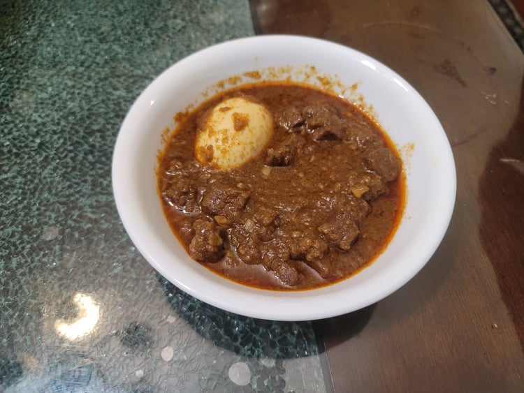

Sega Wat

Ingredients:
- 2 lb Beef chuck, cut into 1/2 inch cubes
- 6 tbsp Nit’ir Qibe
- 3 cups Onion, pureed
- 1 1/2 tbsp Garlic, minced
- 1 1/2 tbsp Ginger, minced
- 1/4 cup Berbere spice blend
- 1 1/2 tsp Salt
- 1 cup Beef broth
- 4 Hard-boiled eggs, pierced with a fork all over
Instructions:
- Heat 3 tablespoons of nit’ir qibe in a large pot. Add in the onion puree and cook, covered, over low heat for 20 minutes, stirring occasionally.
- Stir in the garlic, ginger, and 1 more tablespoon of nit’ir qibe. Cook, covered, over low heat for 10 minutes, stirring occasionally.
- Stir in the berbere and the rest of the nit’ir qibe and cook, covered, over low heat for another 10 minutes, stirring occasionally.
- Mix in the beef, broth, and salt. Bring to a boil and then reduce the heat to low. Cover, and simmer for 45-60 minutes, or until the beef is tender, stirring occasionally. Then taste and adjust for seasonings.
- Add in the eggs and simmer for 10 more minutes. Serve immediately